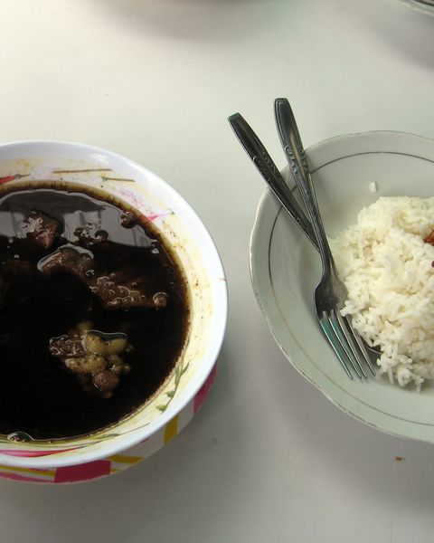
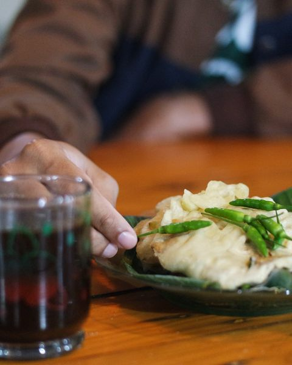

Tempat jujur, foto asli dari orang sekitar.
Cari warung langganan, tempat nongkrong sore, sampai taman kota lewat foto dan video pengunjung nyata. Buka rute langsung di peta atau pesan menu dari tokonya.
Foto & Reels nyata
Rute motor, mobil & jalan
Pesan langsung ke toko

